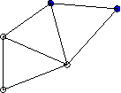
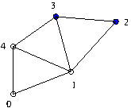
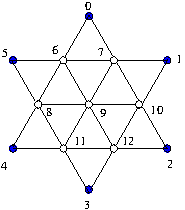

Re-using the A=PLU factorization¶
In some situations we can re-use the A=PLU factorization in multiple problems. An example is solving a boundary value problem for several different boundary conditions. We describe a example of this: the discrete Dirichlet problem.
Some notation¶
If \(X\) is a finite (or countably infinite) set we define $\( \ell^2(X) = \{f: X\rightarrow \mathbb C : \sum_{x\in X} |f_x|^2 < \infty\} \)$
Note 1: If \(X\) is finite then the sum in the definition always converges so \(\ell^2(X)\) actually contains all functions from \(X\rightarrow \mathbb C\)
Note 2: We can equally well consider real valued function \(X\rightarrow \mathbb R\)
Note 3: When \(f,g \in \ell^2(X)\) then the inner (dot) product $\( \langle f, g \rangle = \sum_{x\in X} \overline f_x g_x \)\( is well defined (ie converges) Again obvious if \)X$ is finite.
Example: if \(X=[0,1,2,3]\) then a function \(f:X\rightarrow \mathbb C\) is simply an assignment of a number \(f_i\) to every \(i\in X\), ie a vector \(\begin{bmatrix}f_0\\f_1\\f_2\\f_3\\\end{bmatrix} \in \mathbb C^4\)
If \(X=X_1\cup X_2\) is a disjoint untion then \(\ell^2(X)\) can be written as a direct sum \(\ell^2(X) = \ell^2(X_1) \oplus \ell^2(X_2)\). Here we are identifying functions on \(X_1\) with functions on \(X\) which are zero away from \(X_1\).
Example: If \(X=\{0,1,2,3\} = \{\{0,1\} \cup \{2,3\}\}\) the direct sum decomposition of a vector is $\( \begin{bmatrix}f_0\\f_1\\f_2\\f_3\\\end{bmatrix} = \begin{bmatrix}f_0\\f_1\\0\\0\\\end{bmatrix} + \begin{bmatrix}0\\0\\f_2\\f_3\\\end{bmatrix} \)$
We can define complementary projections \(P\) and \(Q\), where \(P:\ell^2(X)\rightarrow \ell^2(X_1)\) is defined by $\( (Pf)(v) = \begin{cases} f(v) & v\in X_1\\ 0 & v\in X_2\\\end{cases} \)\( and \)Q\( is defined similarly with \)X_1\( and \)X_2\( exchanged. In the example \)\( P : \begin{bmatrix}f_0\\f_1\\f_2\\f_3\\\end{bmatrix} \mapsto \begin{bmatrix}f_0\\f_1\\0\\0\\\end{bmatrix} \quad Q : \begin{bmatrix}f_0\\f_1\\f_2\\f_3\\\end{bmatrix} \mapsto \begin{bmatrix}0\\0\\f_2\\f_3\\\end{bmatrix} \)$
The projections \(P\) and \(Q\) satisfy \(P+Q=I\), \(P^2=P\) and \(Q^2 = Q\).
Define \(\delta_w\) be the function \(\delta_w(v) = \begin{cases} 1 & v=w\\ 0 &\hbox{otherwise}\end{cases}\) Then \(\{\delta_x : x\in X\}\) is an orthonormal basis for \(\ell^2 (X)\).
Vertices, boundary, the discrete Laplacian, boundary conditions.¶
Consider a graph with vertex set \(V\). Here is an example.

We assume that \(V=V_i \cup B\) is a disjoint union of the interior points \(V_i\) and the boundary \(B\). In the example, the boundary vertices are blue. Then $\( \ell^2(V) = \ell^2(V_i) \oplus \ell^2(B) \)\( We have the projections \)Q:\ell^2(V)\rightarrow \ell^2(V_i)\( and \)P:\ell^2(V)\rightarrow \ell^2(B)$
The discrete Laplacian, as an operator, or linear transformation, acting on functions \(f:V\rightarrow\mathbb R\), is defined as
Another way of writing \((Lf)(v)\) is $\((Lf)(v) = \Big(\sum_{w\sim v} f(w) \Big) - c(v)f(v),\)$
where \(c(v)\) is the number of edges joining \(v\). (Aside: The first term \(\sum_{w\sim v} f(w) = (Af)(v)\) is the value at \(v\) of the adjacency operator \(A\) applied to \(f\).)
A function \(f\in\ell^2(V)\) is called harmonic if \(Lf(v)=0\) for all interior points \(v\). For example, constant functions are harmonic. In general, \(f\in\ell^2(V)\) is harmonic if \(QLf=0\)
A boundary condition is a map \(b\in\ell^2(B)\). A function \(f\) satisfies this boundary condition if \(f(v) = b(v)\) for all \(v\in B\). Another way of writing this is \(Pf=b\).
We wish to solve the following problem:
Dirichlet problem:¶
Given a function \(b\) on the boundary, find a harmonic function \(f:V\rightarrow \mathbb R\) that agrees with \(b\) on the boundary.
To solve the Dirichlet problem we must find \(f\in\ell^2(V)\) such that
\(QLf=0\) and \(Pf=b\). Inserting \(I=Q+P=Q^2+P\) in the first equation we find
$\(QLf = QLQ Qf + QLPf = QLQ Qf + QLb=0.\)\(
So if we denote \)Qf\(, the restriction of \)f\( to the interior vertices by \)f_i\(, then \)f_i$ solves
Conversely, if \(f_i\) satisfies this equation, then \(f\) defined by \(f(v) = \begin{cases} f_i(v)& v\in V_i\\b(v) & v\in B\\\end{cases}\) solves the Dirichlet problem with boundary condition \(b\).
The main point¶
If we want to solve the Dirichlet problem for two different boundary condtions on the same graph, then the matrix \(QLQ\) doesn’t change. So we can re-use the PLU decomposition.
Let’s see how this works in the example graph above. To keep track of the vertices we need to label them. Here is a labelling:

Associated to the labelling are orthonormal bases \(\delta_{v_0}, \delta_{v_1}, \delta_{v_2}, \delta_{v_3}, \delta_{v_4}\) for \(\ell^2(V)\) and \(\delta_{v_0}, \delta_{v_1}, \delta_{v_4}\) for \(\ell^2(V_i)\). Writing the matrices for \(L\) and \(QLQ\) with respect to these bases yields $\( L = \begin{bmatrix} -2 & 1 & 0 & 0 & 1\\ 1& -4 & 1 & 1 & 1\\0 &1 &-2 & 1&0\\ 0&1&1&-3&1\\ 1 &1&0&1&-3\\\end{bmatrix} \)\( \)\( QLQ = \begin{bmatrix} -2 & 1 & 1\\ 1& -4 & 1\\1 &1&-3\\\end{bmatrix} \)$
Solving the Dirichlet problem¶
Let’s solve the Dirichlet problem for the example graph for the boundary condition \(b(v_2) = 1\) and \(b(v_3)=0\). The corresponding vector in \(\ell^2(V)\) is \(b=\begin{bmatrix}0\\0\\1\\0\\0\\\end{bmatrix}\). Then $\( Lb= \begin{bmatrix}0\\1\\-2\\1\\0\\\end{bmatrix} \)\( and \)\( -QLb= \begin{bmatrix}0\\-1\\0\\\end{bmatrix} \)$
So must solve $\( \begin{bmatrix} -2 & 1 & 1\\ 1& -4 & 1\\1 &1&-3\\\end{bmatrix} f_i = \begin{bmatrix}0\\-1\\0\\\end{bmatrix} \)$
We could do this as follows:
import numpy as np
import scipy.linalg as la
import matplotlib.pyplot as plt
A = np.array([[-2,1,1],[1,-4,1],[1,1,-3]])
c = np.array([[0],[-1],[0]])
f = la.solve(A,c)
print(f)
[[0.30769231]
[0.38461538]
[0.23076923]]
Instead, we get the solution via the LU factorization
lu, piv = la.lu_factor(A)
f = la.lu_solve((lu,piv),c)
print(f)
[[0.30769231]
[0.38461538]
[0.23076923]]
The advantage is that if we now want to solve the Dirichlet problem with a new boundary condition \(b(v_2) = 0\) and \(b(v_3)=1\) we just need to compute the new right side \(c2 = -QLb = \begin{bmatrix}0\\-1\\-1\\\end{bmatrix}\). We can then reuse the LU factorization:
c2 = np.array([[0],[-1],[-1]])
f2 = la.lu_solve((lu,piv),c2)
print(f2)
[[0.69230769]
[0.61538462]
[0.76923077]]
Let’s verify that we have computed the solutions correctly.
L=np.array([[-2,1,0,0,1],[1,-4,1,1,1],[0,1,-2,1,0],[0,1,1,-3,1],[1,1,0,1,-3]])
Q=np.array([[1,0,0],[0,1,0],[0,0,0],[0,0,0],[0,0,1]])
h1=np.array([f[0],f[1],[1],[0],f[2]])
h2=np.array([f2[0],f2[1],[0],[1],f2[2]])
print(np.transpose(Q)@L@h1)
print(np.transpose(Q)@L@h2)
[[-2.77555756e-17]
[-8.32667268e-17]
[ 2.77555756e-17]]
[[ 0.00000000e+00]
[-4.44089210e-16]
[ 1.11022302e-16]]
L@h1
array([[-2.77555756e-17],
[-8.32667268e-17],
[-1.61538462e+00],
[ 1.61538462e+00],
[ 2.77555756e-17]])
Homework problem 1: The discrete Poisson kernel is the \(5\times 2\) matrix \(PK\) such that for any boundary condtion \(b_2\), \(b_3\), the product \(PK \begin{bmatrix}b_2\\b_3\\\end{bmatrix}\) is the solution of the Dirichlet problem with this boundary condition. Compute \(PK\) for the example above
Homework problem 2: For the graph with boundary shown here

Compute the solution of the Dirichlet problem with boundary values \(b_0=1\), \(b_1=b_2=\cdots = b_5=0\) using the LU decomposition. Then reuse the decomposition to solve the Dirichlet problem with boundary values \(b_0=b_1=b_2=\cdots = b_5=1\) and then with values \(b_0= 0, b_1=1 , b_2=b_3\cdots = b_5=0\). (Actually there is an even easier way to get this last one using the symmetry. Use this to check your computed answer.)